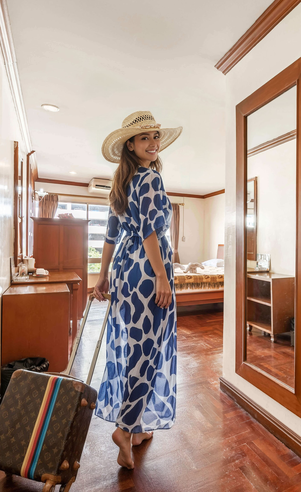

Finding a quiet hotel in the Nana area Bangkok seems contradictory. Nana is Bangkok's most vibrant entertainment district — loud, busy, and active until 2 AM. Yet Royal Ivory Nana Hotel consistently earns praise for quiet rooms and peaceful nights.
The secret is location strategy. While we're just 200 meters from Nana Plaza, we're positioned on Sukhumvit Soi 4 — a side street set back from main road traffic noise. Our rooms face interior courtyards. Solid construction provides real sound insulation. You get the access without the noise.
Guests frequently comment that they're surprised how quiet it is given the hotel's proximity to Bangkok's entertainment district. That reaction — surprise at the peace — is exactly what we've designed for. Explore at night, sleep soundly, explore again.
Our quiet environment isn't accidental. It results from four deliberate location and construction factors:
Royal Ivory Nana sits on Sukhumvit Soi 4 — a side street, not the main Sukhumvit Road. The difference is significant. Main Sukhumvit Road carries heavy 24-hour traffic with tuk-tuks, motorcycles, and buses. Soi 4 is quieter, calmer, and more manageable — a residential-commercial side street rather than a major artery.
Hotels on the main Sukhumvit Road experience constant road noise. We do not. You're 50 meters from the main road, not on it.
Our room layout positions most rooms facing interior courtyards and gardens rather than street-facing. This means even the ambient Soi 4 activity doesn't penetrate the sleeping areas. You look out onto tropical greenery and pool areas, not onto a Bangkok street.
Sound dissipates rapidly with distance. At 200 meters from Nana Plaza, the entertainment complex's ambient noise is not audible from our rooms. This is the critical difference. Hotels directly adjacent to bars and entertainment venues (even upscale ones) face noise issues we simply don't have.
Royal Ivory Nana is built with concrete construction and proper sound insulation between rooms and floors. This is a genuine 3-star standard, not thin partition walls. You hear your own air conditioning, not your neighbors or the street.
These reviews from verified international guests reflect the consistent quiet experience at Royal Ivory Nana:
"Amazing how quiet it is considering we're so close to all the action. Could sleep perfectly even when coming back from Nana at 1 AM — the room was completely silent."
— Verified Guest, Japan
"I was worried about noise being so close to the entertainment district. Total non-issue. Room was peaceful. Air con worked great and completely masked any outside sound."
— Verified Guest, United Kingdom
"Best of both worlds — walked to Nana Plaza in 3 minutes, slept well every night. The courtyard view from the room is actually lovely. Very peaceful."
— Verified Guest, Australia
"Could sleep peacefully despite staying in Nana area. This is not something I expected but very much appreciated. Solid walls, no noise from neighbors."
— Verified Guest, Germany
The Royal Ivory Nana location philosophy is simple: you should not have to choose between access and rest. Many travelers make this false compromise — either staying central and accepting noise, or staying quiet and accepting distance (plus taxi costs).
|
Access: 200m from Nana Plaza (3 min) 2 min from BTS Nana Walking distance to Soi Cowboy (via BTS) Terminal 21 mall: 7 min via BTS All Bangkok via Skytrain |
Peace: Side-street location, not main road Interior courtyard rooms Solid concrete construction Effective room sound insulation Tropical garden atmosphere |
This combination is why Royal Ivory Nana is the most recommended quiet hotel in the Nana area on international travel forums, year after year.
All our rooms benefit from the quiet location, but some configurations offer additional peace:
Standard Superior Rooms facing the interior courtyard offer maximum quiet. Perfect for solo travelers who prioritize sleep quality after a Bangkok evening out.
Larger Deluxe Rooms with kitchenette, positioned facing the hotel garden areas. Extra space for extended stays, excellent quiet, ideal for couples or travelers who want room to spread out.
Our largest rooms at 80 sqm offer premium quiet with the most interior positioning. For travelers wanting maximum comfort and minimum noise, the Presidential Suite is the ultimate quiet Nana hotel experience.
To maximize your quiet hotel experience at Royal Ivory Nana, follow these simple tips:
At Royal Ivory Nana, the commitment to quiet extends beyond room design. Our staff respects guest privacy and we maintain a peaceful lobby atmosphere regardless of the time of night.
Yes. Royal Ivory Nana Hotel is the quiet hotel in the Nana area Bangkok. Side-street positioning, interior courtyard rooms, and solid construction create a genuinely peaceful sleep environment despite being just 200 meters from Nana Plaza entertainment complex.
Yes, at Royal Ivory Nana Hotel. Our guests consistently report quality sleep. The 200-meter distance from Nana Plaza means entertainment noise doesn't reach our rooms. Interior-facing rooms further isolate from any ambient street activity on Soi 4.
Soi 4 has some evening activity, but it's significantly quieter than the main Sukhumvit Road. It's a side street, not a major thoroughfare. Our hotel's interior positioning means most room windows face away from the street, making Soi 4 activity effectively inaudible from the sleeping areas.
At Royal Ivory Nana Hotel, walls are concrete construction — not thin partitions. This is a genuine 3-star standard. Guest reviews consistently confirm they do not hear neighbors, which is a significant advantage over budget guesthouses with thin partition walls common in the Nana area.
Experience Bangkok's most vibrant district without sacrificing sleep. Royal Ivory Nana gives you proximity to Nana Plaza and a peaceful night's rest — plus no joiner charge, authentic Thai-style rooms, outdoor pool, and free WiFi.